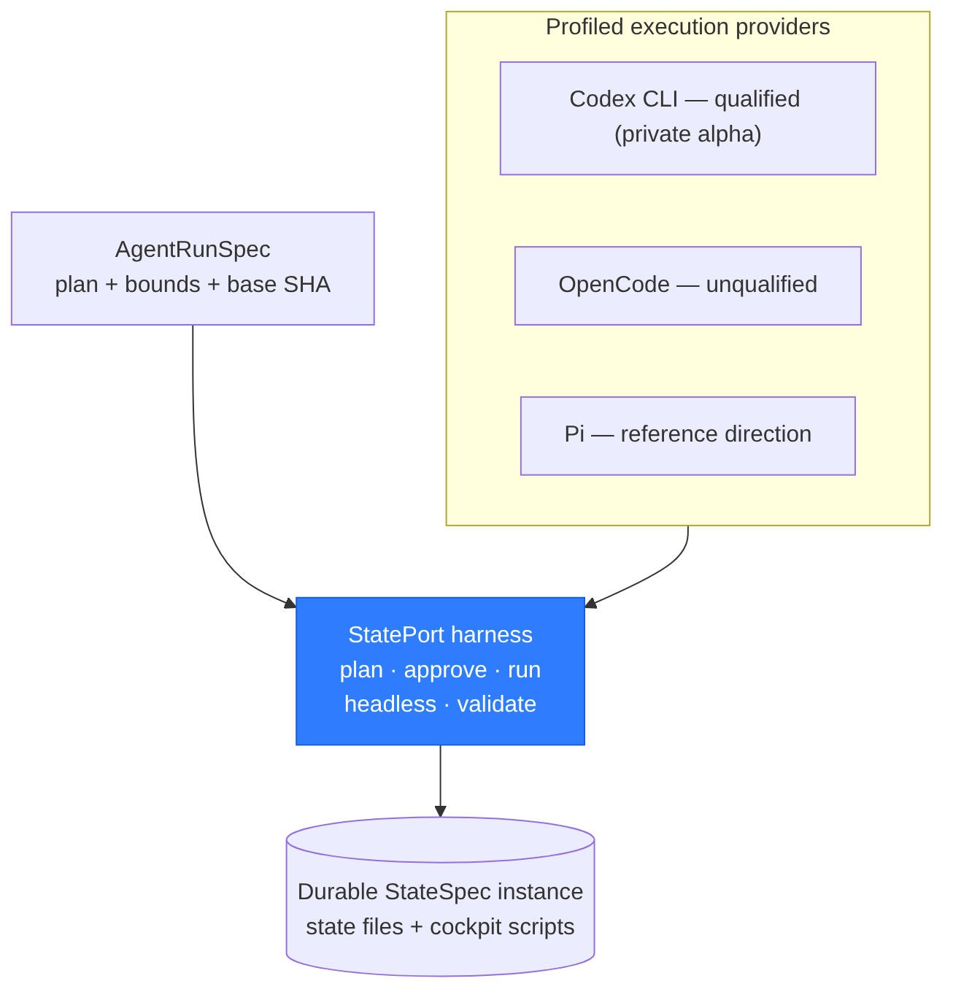

Design overview. Check the release status for current software availability.
The problem with chat alone
A chat is good for asking questions. It is a poor place to keep an application's memory, permissions, decisions, and history. Long threads get shortened. Sessions disappear. A transcript may contain several conflicting versions of the same fact.
StatePort moves the important information into readable files on your machine. The chat can still help, but it is no longer the only copy of your work.
What Stateware means
Stateware is software built around durable, inspectable state. Its useful memory belongs to the application, not to one AI model or provider.
application
= reusable workflow
+ your saved state
+ clear permissions
+ change historyWhere the AI tool fits
An AI tool can plan work, explain a choice, and prepare a change. StatePort decides what the tool may access, asks you before important actions, and saves the result in the application.

What this gives you
- Open the current goals and progress without replaying a chat.
- Change AI tools without throwing away the application.
- Review a proposal before it changes saved work.
- See a clear message when a tool cannot do something safely.
The goal
StatePort should help you resume work faster, understand changes, and keep useful context when a tool or session changes.